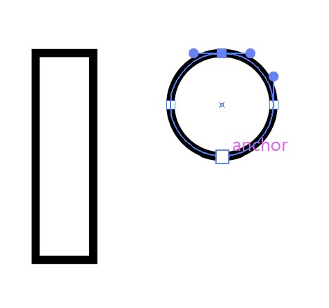
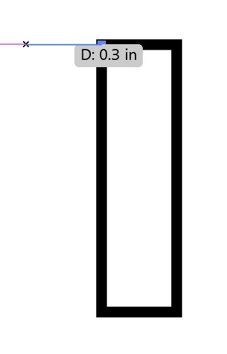

WRT Logo Tutorial in Adobe Illustrator
MATERIALS:
- A Laptop / Desktop
- Adobe Illustrator (they offer a 7-day free trial if users don't want to pay for the program)
- Computer Mouse (recommended but not necessary)
TROUBLESHOOTING:
- If a tool is not behaving as expected, make sure you've pressed "Esc" so that you have nothing selected. For example, if you do not press escape at the end of Step 18, then the "Pen Tool" in Step 19 may delete points from the rectangle you created.
- If you completed a step incorrectly and need to undo something you just did, you can press "Ctrl" and "Z" simultaneously ("Command" and "Z" for Mac computers). You can also do this by going to the menu at the top of your screen under "Edit" and selecting "Undo."
INSTRUCTIONS:
- Open up Adobe Illustrator and create a new document by clicking "New File," then select whichever size document would best suit your desired project.
- In order to follow this tutorial verbatim, set your workspace to "Essentials Classic." Do this by selecting the window button from the panel located at the top of your screen. Click "Workspace" from the pop-up that emerges, and then select "Essentials Classic."
- To start out, you will create the W. In order to create a triangle, right click on the "Rectangle Tool", which is located on the left panel of the screen. Then select the "Polygon Tool" from the menu that pops up. Click once somewhere on your document and use the pop-up box to change the number of sides to 3. You can also change the radius of the polygon, if so desired. Then press "OK." You should see a new triangle appear on your document.
- Select the "Selection Tool" from the top left corner of the left panel. Click on your new triangle and navigate to the "Properties" panel on the right side of your screen. Under "Appearance," there is something called the "Stroke." This changes the thickness of the line around your shape. Increase or decrease the stroke to your liking.
- Staying in the "Properties" panel, under "Transform" there is an option for the angle or rotation of the object. Rotate it 180°.
- Copy the triangle by clicking on the shape, and then hitting the "Ctrl" and "C" buttons simultaneously on the keyboard of your computer. Then hit "Ctrl" and "V" to paste.
- Click on one of your shapes, and drag it to whichever place works best for your design. Press "Esc" (escape) on your keyboard to deselect the object.
*Note that your shapes will overlap if you place one above the other, but if you want to, you can make your shapes transparent so you can see the lines by doing the following: under "Appearance" in the "Properties" panel, click on the white box next to "Fill." A color menu should pop out. Click the little white box that has a red line through it, which denotes the no fill option. This will take the fill out of your shape so you can see the lines in the shape below.
- Select both triangles by either clicking in the white space around the objects and dragging until the selection box covers both objects, or by selecting one triangle, holding down "Shift," and selecting the other. Then right-click and select "Group." The finished W will now act as one object.

- To begin creating the R, you want to start with a rectangle. Right-click the "Polygon Tool" we used in Step 3, and select the "Rectangle Tool" from the menu. Move your cursor to the right of your W until you see a pink line – the pink lines are guides to help you align objects with one another. Then click and hold your mouse button, dragging the box down and to the right, and release the button once you have your desired size of rectangle. Press Esc to deselect the object.
- Going back to the left toolbar, right-click the Rectangle Tool and choose the "Ellipse Tool" from the menu. On your document, click and drag while holding the "Shift" key on your keyboard to make it a perfect circle, then release once you have your desired size.
- In the left toolbar, right-click the "Eraser Tool" and select the "Scissors Tool." Using the scissors, select the top point and bottom point of the circle to cut the circle in half. Go back to the selection tool, select the left side of the circle, and delete it.

- Now select the right side of the circle. Under the "Properties" panel, make sure that the "link" button is selected. Change the height of the half circle to half the height of your rectangle.
*Note: In order to check the height of your rectangle, select it with the “Selection Tool” and look at the top of the “Properties” panel. The number next to “H:” is the height. Divide that number by two in order to get the height of your half circle.
- Go to the "Pen Tool" and select the top point of the half circle by clicking on it once. Pull your cursor to the left (without holding your mouse button), holding shift to keep the line straight, and click once when you get the desired length. Then press "Esc". Do the same for the bottom of the half circle, making sure that you see the pink guides appear to tell you that the bottom line is the same length as the top line.
- Switch to the "Selection Tool" and select the new shape. Make the fill of the object transparent (see the note under Step 6 for instructions). Now drag the new shape over to the rectangle, positioning the top left corner of the shape to connect with the top right corner of the rectangle.

- To create the leg for the R, pick the "Pen Tool" and click the bottom left corner of the shape you created in Step 11. Pull the cursor down and to the right until you see pink guidelines connect to the end of the semi circle and the bottom of the rectangle. Click once, then press "Esc".
- Go back to the "Selection Tool" and right click the shape you just made. In the menu, go to "Arrange" then "Send to Back."
- Group the shapes making up the R (see Step 7 for instructions).
- Now to create the T, make another rectangle like we made for the R earlier(see Step 9 for instructions) and move it to where you'd like it. Press "Esc."
- Go to the "Pen Tool" and make a straight line from the top left corner of the rectangle out to the left. Do the same on from the top right corner of the rectangle, making sure it is the same length as the line on the left. You can also copy the line on the left and move it to the correct place on the right.

- Group the shapes making up the T (see Step 9 for instructions).
- You can now move the three letters however you'd like to reach your desired final look.

Finished Logo: